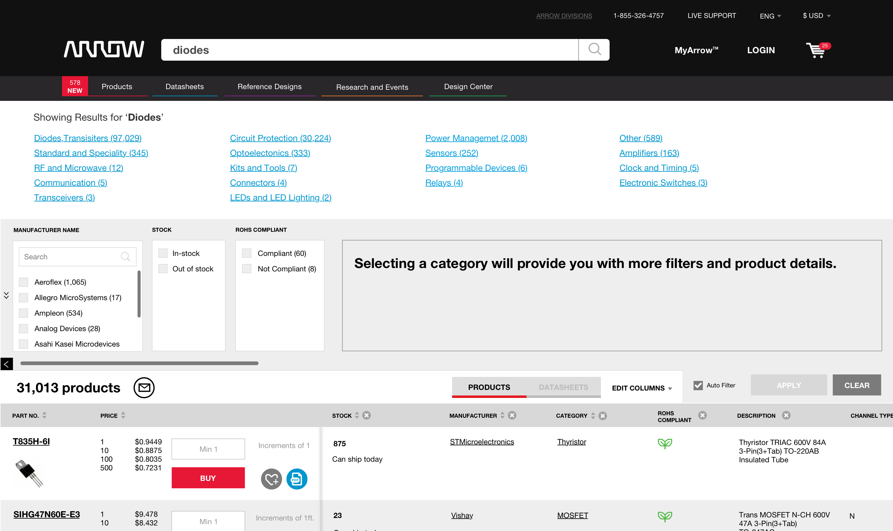
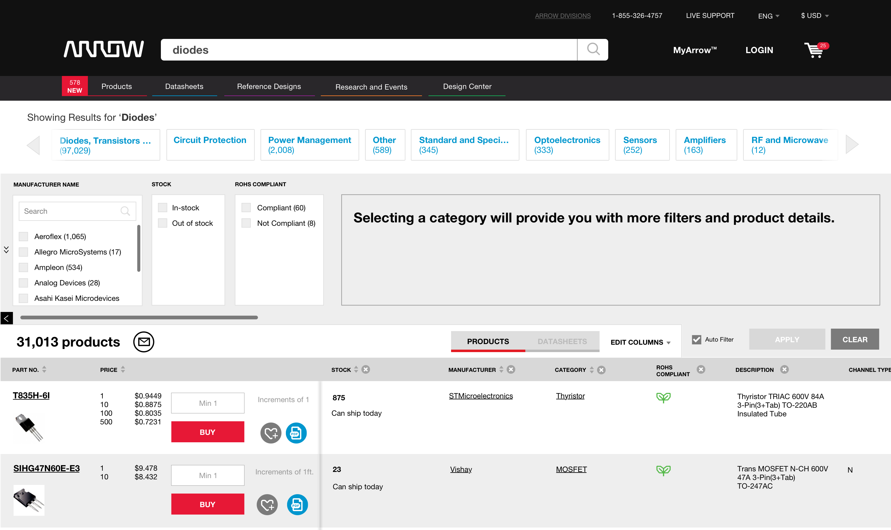

THE PROBLEM
Due to the millions of parts on arrow.com, users have to engage in selecting a category before they are able to see relevant part filters. Through user testing and google analytics I realized users were not engaging with the category filter, causing increased frustration with the search results and their ability to find what they needed. I brought this to the attention of the product owner and after some preliminary research, we determined that changing the visual treatment would be the simplest solution with the least effect on the performance of the page.
THE SOLUTION
We hypothesized that by pulling the category filter to the top of the page and giving it a different visual treatment, users would engage with it more thus reducing user frustration and time spent evaluating search results. Users would be able to select a category and drill down into subcategories until they were satisfied with the specific filters and/or search results. We tested this feature by running an AB test against the original design (options shown below)
OPTION A
OPTION B
After our test reached significance OPTION B was declared the winner, doubling engagement from the original design.